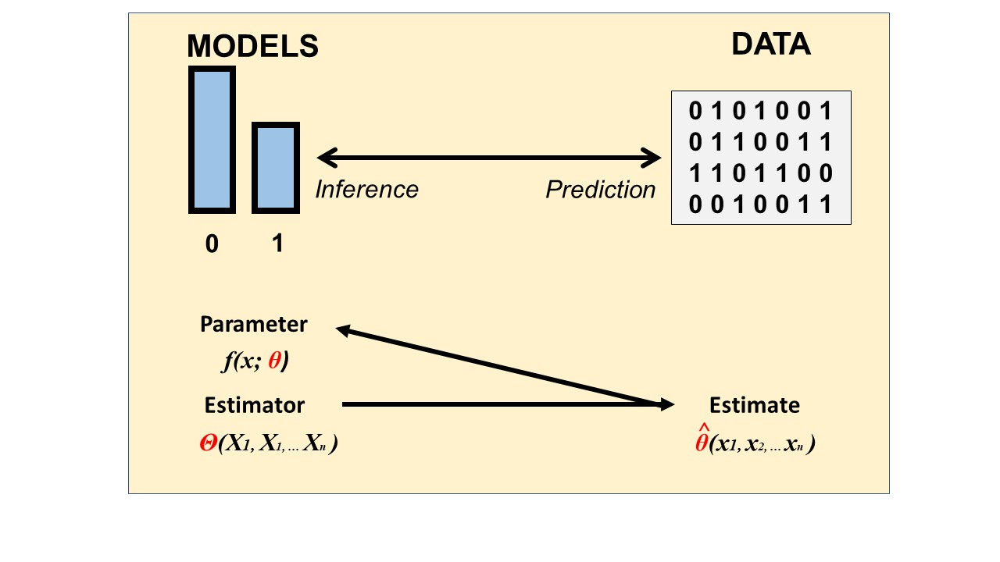
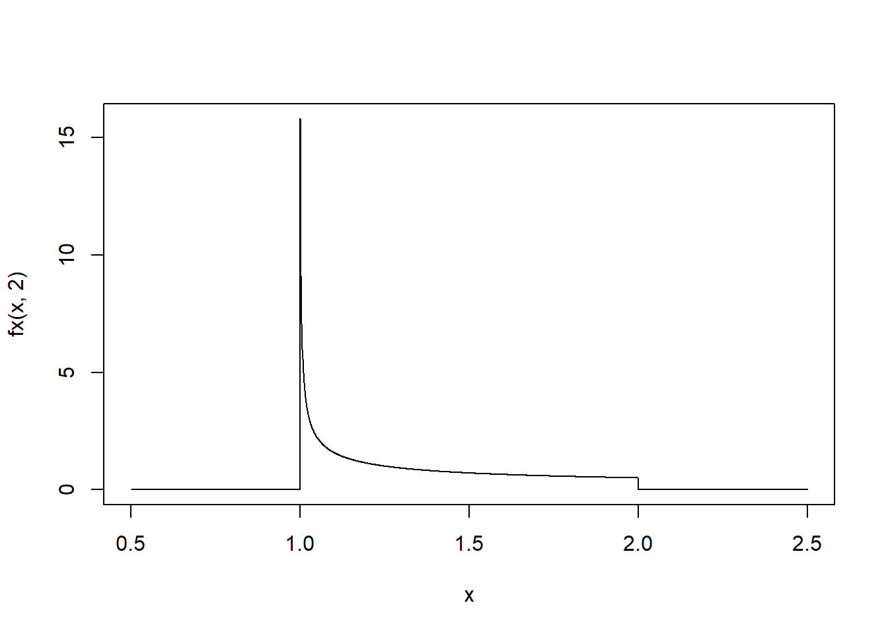
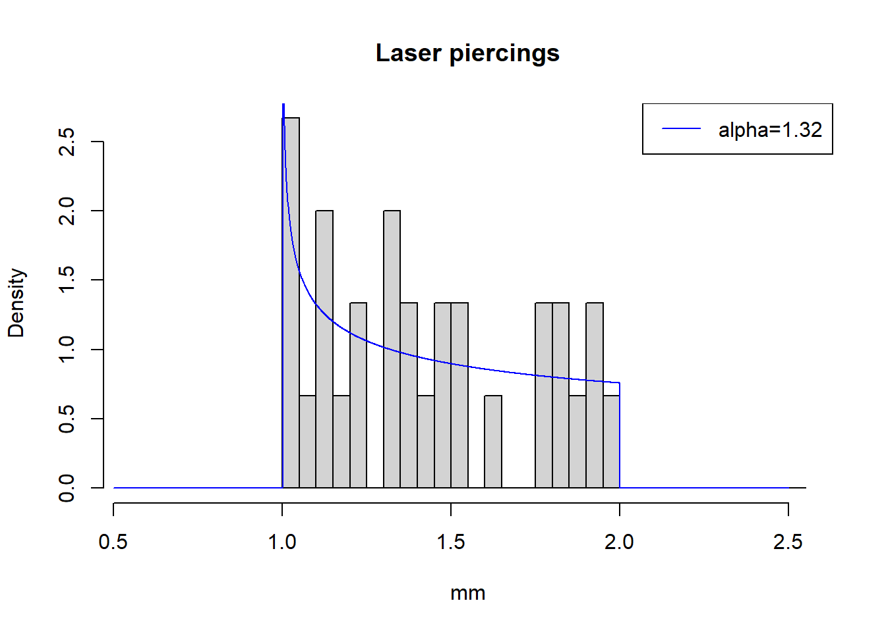
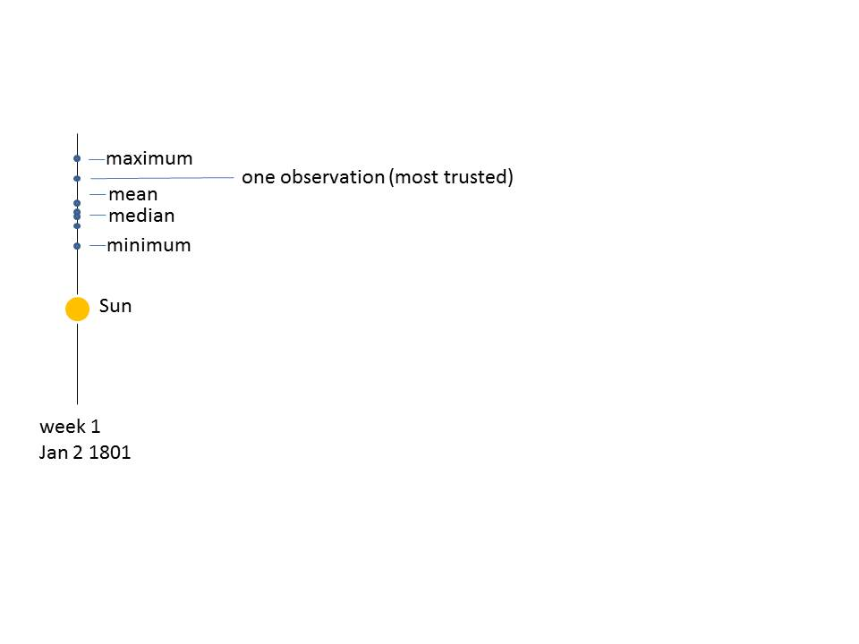
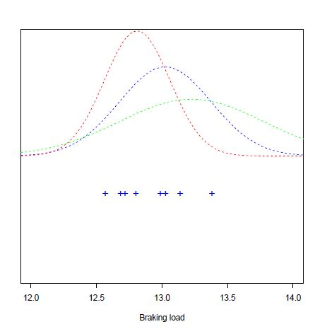

Chapter 12 Maximum likelihood
12.1 Objective
In this chapter we will discuss what an estimator is and give some examples. Then we will introduce a method for obtaining estimators of the parameters of probability models. This is the maximum likelihood method.
12.2 Statistic
Definition
A statistic is any function of a random sample \[T(X_1,X_2, ..., X_n)\]
It usually returns a number.
Statistics are random variables and their probability distributions are called sampling distributions
Statistics have different functions:
- Description of a sample’s data
- location: \(\bar{X}\)
- Minimum: \(\min\{X_i\}\)
- Maximum: \(\max\{X_i\}\)
- Estimation of a probability model’s parameters
- mean: \(\bar{X}\) for \(\mu\)
- variance: \(S^2\) for \(\sigma^2\)
- Inference to say something about the parameters given the data
- mean: \(Z\), \(T\)
- variance: \(\chi^2\)
Remember: They are all random variables. Every time we take another sample they change their value.
Definition of estimators
An estimator is a statistic whose observed values are used to estimate the parameters of the population distribution on which the sample is defined.
If we write the population distribution as
\[X \rightarrow f(x; \theta)\]
then \(\theta\) is a parameter and \(\Theta\) is a random variable whose observations \(\hat{\theta}\) we take as estimations of \(\theta\)
\[\hat{\theta} \sim \theta\]
Therefore there are three different quantities that we must consider:
- \(\theta\) is a parameter of the population distribution \(f(x; \theta)\)
- \(\Theta\) is an estimator of \(\theta\): A random variable
- \(\hat{\theta}\) is the estimate of \(\theta\): A realized value of \(\Theta\)

Example (Sample mean)
When we have a normal random variable
\[X \rightarrow N(\mu, \sigma^2)\]
we identify the three different quantities:
- \(\mu\) is a parameter of the population distribution: distribution of \(X\), \(N(\mu, \sigma^2)\)
- \(\bar{X}\) is an estimator of \(\mu\)
- \(\bar{x}=\hat{\mu}\) is the estimate of \(\mu\)
Example (Sample variance)
When we have a normal random variable
\[X \rightarrow N(\mu, \sigma^2)\]
- \(\sigma^2\) is a parameter of the population distribution
- \(S^2\) is an estimator of \(\sigma^2\)
- \(s^2=\hat{\sigma^2}\) is the estimate of \(\sigma^2\)
12.3 Properties
- An estimator is unbiased if it expected value is the parameter
\[E(\Theta)=\theta\]
For example:
\(\bar{X}\) is an unbiased estimator of \(\mu\) because \(E(\bar{X})=\mu\)
\(S^2\) is an unbiased estimator of \(\sigma^2\) because \(E(S^2)=\sigma^2\)
- An estimator is consistent when its observed values get closer and closer as the sample size is icreased
\[lim_{n\rightarrow \infty} V(\Theta) = 0\]
For example:
- \(\bar{X}\) is consistent because \(V(\bar{X})=\frac{\sigma^2}{n}\rightarrow 0\) when \(n \rightarrow \infty\).
- The mean squared error \(mse\) of \(\Theta\) is its expected squared difference from the parameter
\[mse(\Theta)=E([\Theta - \theta]^2)\]
or equivalently is the sum of the errors
\[mse(\Theta)=se^2 + bias^2\]
where \(se=\sqrt{V(\bar{X})}\) is the standard error.
12.4 Maximum likelihood
How can obtain estimators of the parameters of any probability model?
Example (Laser)
Imagine we design a laser with a diameter of \(1mm\) that we want to use for clinical applications.
We want to characterize the diameter of a piercing in a tissue made with the laser and take a random sample of \(30\) cuts made with the laser. Here are the results
## [1] 1.11 1.64 1.20 1.79 1.89 1.01 1.31 1.81 1.34 1.25 1.92 1.24 1.49 1.36 1.03
## [16] 1.82 1.09 1.01 1.14 1.91 1.80 1.51 1.44 1.98 1.46 1.53 1.33 1.39 1.12 1.04and the histogram

What is a probability function that can describe the data?
For this we follow the following process:
- we propose a model that depends on parameters
- we derive the estimators for the parameters, by maximum likelihood or the method of moments.
- finally we use the estimator to estimate the parameters with the data.
Proposing a probability density
In many applications, we can propose the form of a probability density that depends on some parameters. Proposing a probability model is done by following general properties of the observations, or what we expect to observe. Modelling requires experience, skill and knowledge of several mathematical functions. However, in most cases well known models are typically applied.
Example (Laser)
In our example, we may consider for example that maximum probability should be given to diameters of \(x=1mm\), and that the diameters should decrease as the inverse power of some unknown parameter \(\alpha\), with a limit of \(2mm\) beyond which the probability is \(0\).
A suitable probability density distribution is
\[ f(x)= \begin{cases} \frac{1}{\alpha}(x-1)^{\frac{1}{\alpha}-1},& \text{if } x \in (1,2)\\ 0,& x \notin (1,2)\\ \end{cases} \]
Where \(\alpha\) is a parameter. This is a probability density because it integrates to one and it is positive. In particular, for \(\alpha=2\) we can plot it

Deriving the estimators
If we perform a \(n\)-sample: \(X_1,...X_n\), how should we combine the data for obtaining the best value of \(\alpha\)?
Many values of the parameters could explain the data. We are interested in one criterion to choose one particular value.

The maximum likelihood method that gives us the estimator for \(\alpha\)
\[\hat{\alpha}_{ml}\]
12.5 Maximum likelihood
The objective is to find the value of the parameter that we believe can best represent the data.
The method of maximum likelihood is based on the search for the parameter value that makes the observation of the sample the most probable.
Maximum likelihood step 1
We calculate the probability of having observed the \(n\)-sample: \(x_1,...x_n\). It is the product of probabilities because observations are independent of one another:
\(P(M=x_1,...x_n)=P(X=x_1)P(X=x_2)...P(X=x_n)\) \[=f(x_1;\alpha)f(x_2;\alpha) ...f(x_n;\alpha)\]
We call this function the likelihood function and we consider that:
- Once the data are observed, they are fixed
- The unknown is \(\alpha\)
\[L(\alpha)= \Pi_{i=1..n} f(x_i; \alpha)\]
Example (Laser)
For the laser experiment the likelihood is
\(L(\alpha;x_1,..x_n)= \frac{1}{\alpha^n} \Pi_{i=1..n} (x_i-1)^{\frac{1-\alpha}{\alpha}}= \frac{1}{\alpha^n} \{(x_1-1)(x_2-1)...(x_n-1)\}^{\frac{1-\alpha}{\alpha}}\)
Maximum likelihood step 2
We then ask: what is the value of \(\alpha\) that makes the observed sample the most probable event? We thus want to maximize \(L(\alpha)\) with respect to \(\alpha\). Since we have the multiplication of many factors is easier to maximize the logarithm of \(L(\alpha)\). This is called the the log-likelihood function:
\[\ln L(\alpha;x_1,..x_n)\]
Example (Laser)
In the laser example, we therefore take the logarithm and obtain the Log-likelihood
\[\ln L(\alpha;x_1,..x_n)= -n \ln(\alpha) + {\frac{1-\alpha}{\alpha}} \Sigma_{i=1...n} \ln (x_i-1)\]
Maximum likelihood step 3
Finally we maximize the log-likelihood with respect to the parameter. Therefore, we differentiate the log-likelihood with respect to the parameter \(\alpha\), equate to zero and solve for the maximum.
\[\frac{d \ln L(\alpha)}{d \alpha} \big|_{\hat{\alpha}}=0 \] The value of the parameter at the maximum is called the maximum likelihood estimate for the parameter and its written with a hat \(\hat{\alpha}\).
Example (Laser)
We derive the log-likelihood
\[\frac{d \ln L(\alpha)}{d \alpha}= -\frac{n}{\alpha} - \frac{1}{\alpha^2} \Sigma_{i=1...n} \ln (x_i)\] The maximum is where the derivative is \(0\). This maximum is the value of our estimator \(\hat{\alpha}_{ml}\).
\[\hat{\alpha}_{ml}=-\frac{1}{n}\sum_{i=1}^n \ln (x_i-1)\]
The estimator of the parameter is therefore (note the capital letters)
\[A=-\frac{1}{n}\sum_{i=1}^n \ln (X_i-1)\]
Which is a random variable, function of the random sample
\[(X_1, X_2, ... X_n)\]
Estimating the parameters with the data
In our example, we then have the observation of the random sample as a set of 30 numbers \((x_1, x_2, ...x_{30})\), we therefore substitute the numbers in the estimator and this will give us its observed value.
\(\hat{\alpha}_{ml}=-\frac{1}{n}\{ \ln (1.11-1)+ \ln (1.64-1)+...\ln (1.04-1)\}=1.320\)
Therefore the maximum likelihood estimate of the parameter is \(1.320\). If we substitute this value in the probability function, and overlay it with the histogram, we can see that it gives us a suitable description of the data.

Let’s look at the log-likelihood function for our \(30\) laser cuts. Remember, data is fixed by our experiment and \(\alpha\) varies. The function has a maximum. However, if we take another sample this function changes and so does its maximum.

Maximum likelihood: History
To infer the true position of Ceres at a given time, Gauss derived the error function
\[f(x; \mu, \sigma^2)= \frac{1}{\sigma \sqrt{2 \pi}} e^{-\frac{1}{2\sigma^2} (x-\mu)^2}\]
Where the true position of Ceres was the mean \(\mu\). How can we combine the data for having the best estimate for the position of Ceres?
What is the statistic that can describe best its position?

This question can be formulated as: What is the maximum likelihood estimate of \(\mu\) for a random normal variable?
Maximum likelihood of the normal distribution
For a random normal variable
\[X \rightarrow N(\mu, \sigma^2)\].
What are the estimators of \(\mu\) and \(\sigma^2\) that maximize the probability of the observed data?

We follow the maximum likelihhod method:
- The likelihood function, or the probability of having observed the sample \((x_1, ....x_n)\) is
\(L(\mu, \sigma^2)=\Pi_{i=1..n} f(x_i;\mu,\sigma)\)
\[=\big( \frac{1}{\sigma \sqrt{2 \pi}}\big)^n e^{-\frac{1}{2\sigma^2} \sum_i(x_i-\mu)^2}\]
- We take the log of \(L\), and compute the log-likelihood
\[\ln L(\mu, \sigma^2)=-n \ln(\sigma \sqrt{2 \pi})-\frac{1}{2\sigma^2} \Sigma_i(x_i-\mu)^2\]
The estimates of \(\mu\) and \(\sigma^2\) are where the likelihood is maximum. They give the highest probability for the data.
- We differentiate with respect to \(\mu\) and \(\sigma^2\). These two derivatives give us two equations, one for each of the parameters. For deriving respect to \(\sigma^2\), it is easier to make a substitution \(t=\sigma^2\).
\(\frac{d \ln L(\mu, \sigma^2)}{d\mu}=\frac{1}{\sigma^2} \sum_i(x_i-\mu)\)
\(\frac{d \ln L(\mu, \sigma^2)}{d\sigma^2}=-\frac{n}{2 \sigma^2}+\frac{1}{2\sigma^4} \sum_i(x_i-\mu)^2\)
The derivatives are \(0\) at the maxima
- \(\frac{1}{\hat{\sigma}^2} \sum_i(x_i-\hat{\mu})=0\)
- \(-\frac{n}{2 \hat{\sigma}^2}+\frac{1}{2\hat{\sigma}^4} \sum_i(x_i-\hat{\mu})^2=0\)
solving both equations for the parameters we find for \(\mu\)
\[\hat{\mu}_{ml}=\frac{1}{n}\sum_i x_i=\bar{x}\]
and for \(\sigma^2\)
\[\hat{\sigma}^2_{ml}=\frac{1}{n}\sum_i(x_i-\bar{x})^2\]
Therefore the average \(\bar{X}\) is the maximum likelihood estimator of the mean \(\mu\). Gauss showed that the statistics that we should trust most (that with highest likelihood) for the real position of the Ceres was the average. Gauss solving the position of Ceres, not only discover the normal distribution, but also created the regression analysis and showed the importance of the average. It is due to him that we use the average for many things, and not some other statistic.
In addition, the maximum likelihood estimator of \(\sigma^2\) is a biased estimator because it can be shown that \[E(\hat{\sigma}^2_{ml})=\sigma^2+\frac{\sigma^2}{n}\neq \sigma^2\]
It was Fisher who showed that this estimator was important, as he used it to generalize the central limit theorem
12.6 Questions
1) An estimator is not
\(\qquad\)a: a statistic; \(\qquad\)b: a random variable; \(\qquad\)c: discrete; \(\qquad\)d: an observation of the parameter;
2) An estimator is unbiased if
\(\qquad\)a: it is the parameter that it estimates; \(\qquad\)b: depends on \(1/n\); \(\qquad\)c: its variance is small; \(\qquad\)d: its expected value is the parameter it estimates;
3) An estimator is consistent if
\(\qquad\)a: it is the parameter that it estimates; \(\qquad\)b: depends on \(1/n\); \(\qquad\)c: its variance is small; \(\qquad\)d: its expected value is the parameter it estimates;
4) The maximum likelihood method
\(\qquad\)a: Produces estimators based on the probability of the observations; \(\qquad\)b: produces unbiased estimators; \(\qquad\)c: produces consistent estimators; \(\qquad\)d: produces estimators equal to those of the method of moments;
12.7 Exercises
12.7.0.1 Exercise 1
Take a random variable with the following probability density function
\[ f(x)= \begin{cases} (1+\theta)x^\theta,& \text{if } x\in (0,1)\\ 0,& x\notin (0,1) \end{cases} \]
What is the maximum likelihood estimate for \(\theta\)?
If we take a \(5\)-sample with observations \(x_1 = 0.92; \qquad x_2 = 0.79; \qquad x_3 = 0.90; \qquad x_4 = 0.65; \qquad x_5 = 0.86\)
What is the estimated value of the parameter \(\theta\)?
- Compute \(E(X)=\mu\) as a function of \(\theta\). What is the maximum likelihood estimate for \(\mu\)?
12.7.0.2 Exercise 2
For a random variable with a binomial probability function
\[f(x; p)=\binom n x p^x(1-p)^{n-x}\]
What is the maximum-likelihood estimator of \(p\) for a sample of size \(1\) of this random variable?
In one exam of \(100\) students we observed \(x_1=68\) students that passed the exam. What is the estimate of the \(p\)?
12.7.0.3 Exercise 3
Take a random variable with the following probability density function
\[ f(x)= \begin{cases} \lambda e^{-\lambda x},& \text{if } 0 \leq x\\ 0,& otherwise \end{cases} \]
What is the maximum likelihood estimate for \(\lambda\)?
If we take a \(5\)-sample with observations \(x_1 = 0.223 \qquad x_2 = 0.681; \qquad x_3 = 0.117; \qquad x_4 = 0.150; \qquad x_5 = 0.520\)
What is the estimated value of the parameter \(\lambda\)?
What is the maximum likelihood estimate of the parameter \(\alpha=\frac{n}{\lambda}\)
Is \(\alpha\) an unbiased and consistent estimator of the mean of the sample sum \(E(Y)\), where \(Y=\sum_1^n X_i\)?